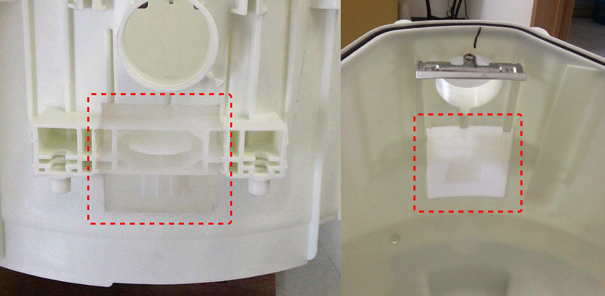
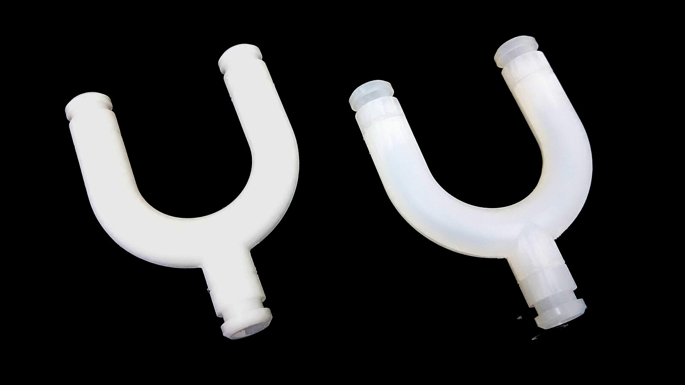
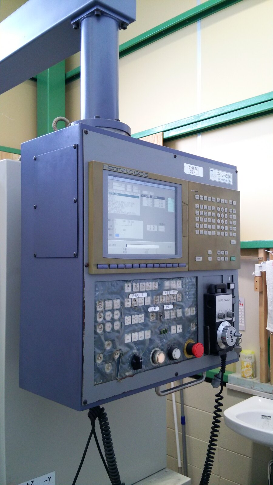
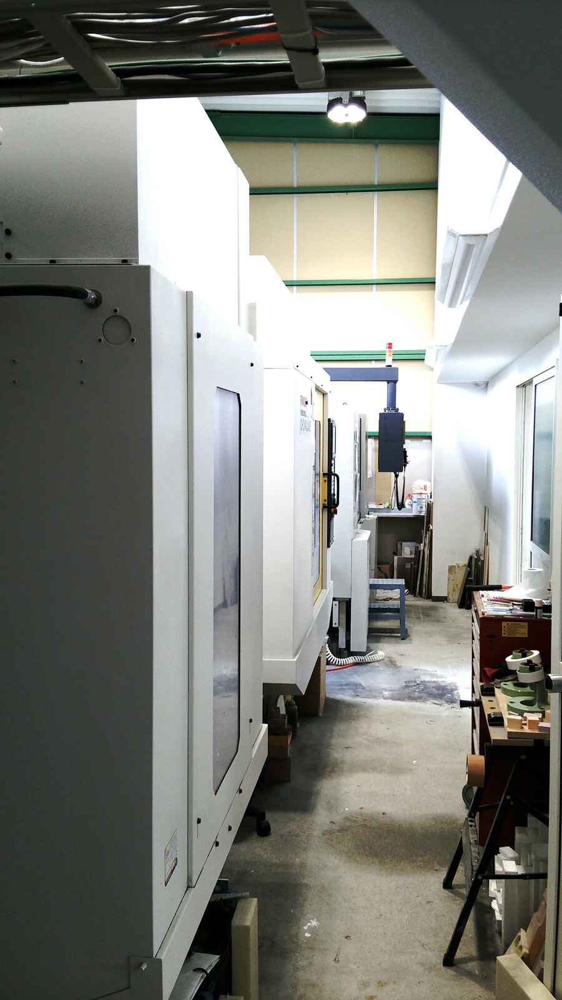
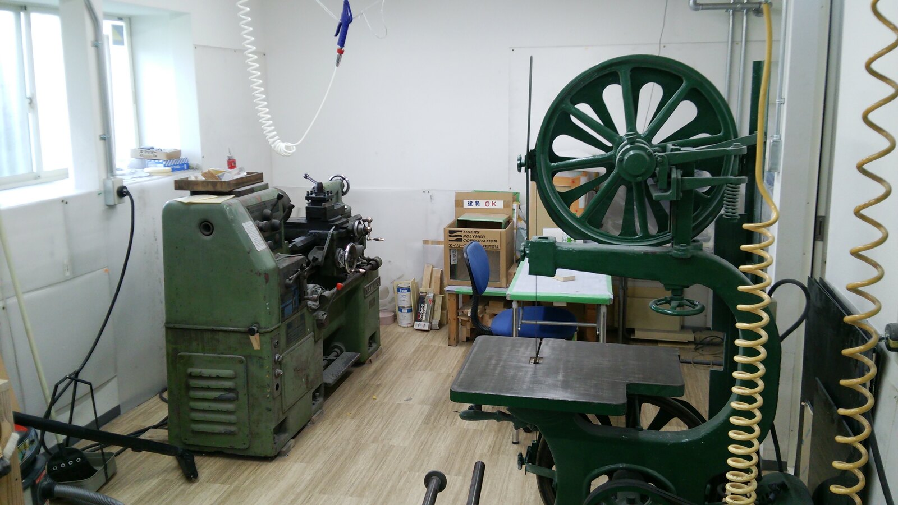
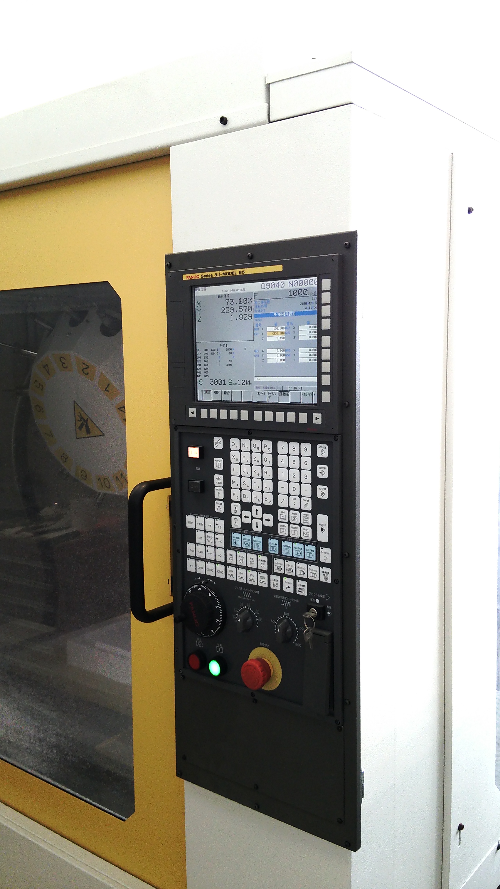
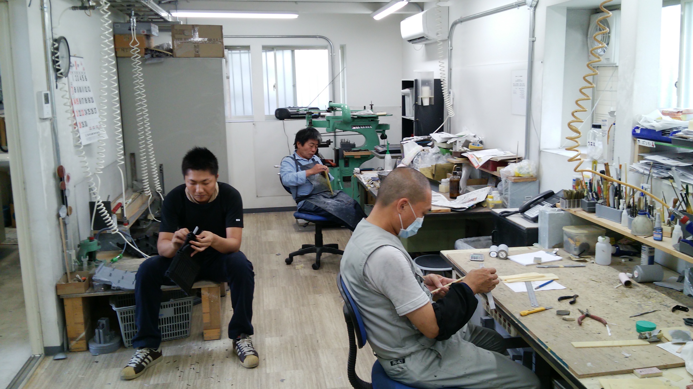

高精度な試作
ハイエンド3D-CADによる高精度な試作に対応します。
Material / Modification
既に製作されたモデルのマイナーチェンジや部分修正にも対応します。 一部を作り変えることでコストダウンを検討でき、試作品の耐久性も保持されます。

Modification
既に製作されたモデルでマイナーチェンジが必要になる場合、 一部を作り変えることでコストダウンを検討できます。

ジュラコン PPWelding
パイプ構造の溶接加工例にも対応します。部分変更と同様に、 一部を作り変えることでコストダウンを検討できます。
Equipment Introduction
ハイエンド3D-CADによる高精度な試作から、各仕様に適した表面処理を手加工にて対応します。
ハイエンド3D-CADによる高精度な試作に対応します。
各仕様に適した表面処理を、仕上がりを見ながら手加工で対応します。





Machining Materials
ABS、PC、PP、PPS（ガラス40％）、ベイク（布・紙）、ワーカム（人工木材）、ハッポウ、アルミに対応します。
Equipment
NCマシーン、PC造形機、ABS造形機について、切削寸法、台数、メーカー名を掲載します。
Contact
土日も営業。価格、納期ご相談ください。